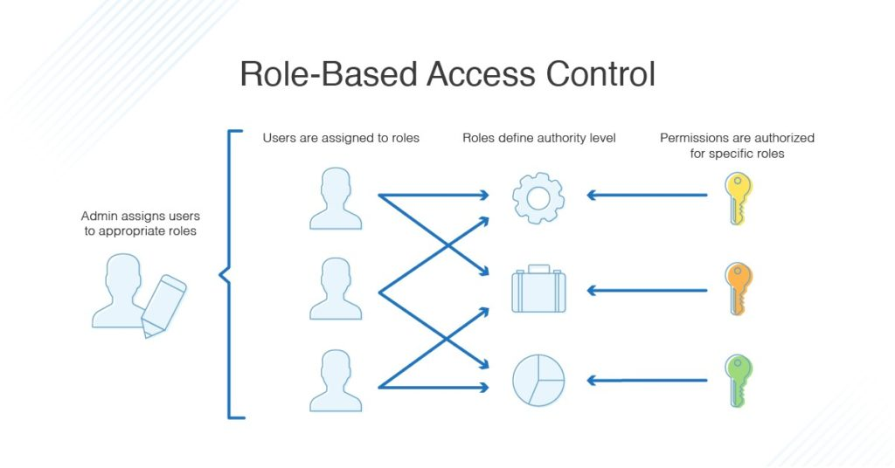
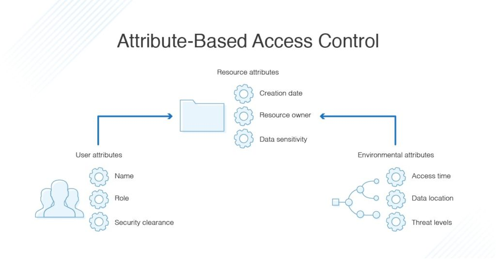
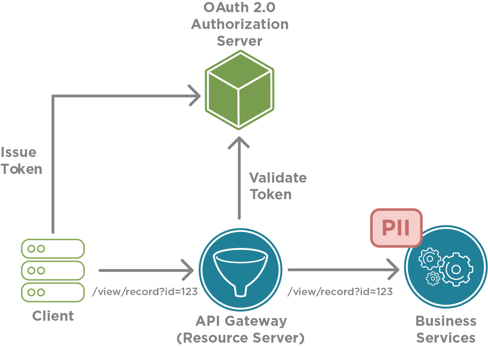
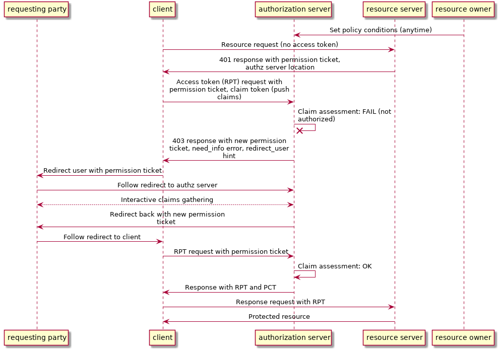

Обзор систем авторизации OAuth + UMA Protocol flow
Table of Contents
1 Ссылки
про реальзацию RBAC на Rest https://cloudify.co/blog/simple-secure-role-based-access-control-rest-api-rbac-server-devops-cloud-orchestration/ Filter output: https://www.baeldung.com/spring-security-role-filter-json ABAC with spring security: https://dzone.com/articles/simple-attribute-based-access-control-with-spring
2 Модель контроля доступа
2.1 DAC (Discretionary Access Control)
2.2 MAC (Mandatory Access Control)
Модель контроля доступа, в которой реализация запрещает субъектам передавать права доступа. Права доступа определяются администратором системы.
2.3 RBAC (Role-Based Access Control)

Figure 1: RBAC
- модель контроля доступа, в которой доступ к операции производится на основании того, содержит ли роль субъекта соответствующую привилегию.
Роль - множество привилегий, доступных пользователям, которым присвоены соответсвующие роли.
Субъекту может быть присвоено несколько (0…n) ролей. Роли может быть присвоено несколько привилегий (возможностей исполнить операцию) и/или объектов.
2.4 ABAC (Attribute-Based Access Control)
- модель контроля доступа, в которой во внимание принимаются свойства (атрибуты) субъекта или объекта, а также свойства окружения (дата, время доступа).

Например:
- Пользователь(sub) может просмотреть документ(obj), если он(obj) создан коллегами из того же департамента
- Пользователь(sub) может редактировать документ(obj), если он(subj) создал его(obj) и установлен режим черновика(obj).
2.5 PERM
Policy, Effect, Request, Matchers.
3 Авторизация
3.1 OAuth 2.0
Повсеместно используемое решение для авторизации - OAuth 2.0
Работает следующим образом:

- Client посылает запрос к Authorization Server (AS)
- Если Client не залогинен (кука нет или не валидный)
- AS выдает форму логина и проверяет, что пользователь вошел правильно. Источник пользователей - откуда угодно (DB, LDAP, etc)
- AS возвращает некоторый Token
- API Gateway видит запрос с Token
- API Gateway отправляет Token на AS
- Если Token верный, AS одобряет.
Доступ к отдельным объектам (Entities) в такой модели регулируется протоколом UMA:

4 Решение авторизации
4.1 Casbin
Универсальная библиотека для поддержки access control с лицензией Apache 2.0
- Источник пользователей - внешний
- Авторизация - внешняя
4.1.1 Общие характеристики
- сайт: https://github.com/casbin/casbin
- языки: Go (язык реализации), биндинги: Java, Node.js, PHP, Python, C#, Rust (experimental)
- Поддерживаемые модели:
- Поддерживается RESTful API и приоритет правил.
4.1.2 Конфигурация
Модель прав доступа специфицируется конфигурационным файлом по метамодели PERM